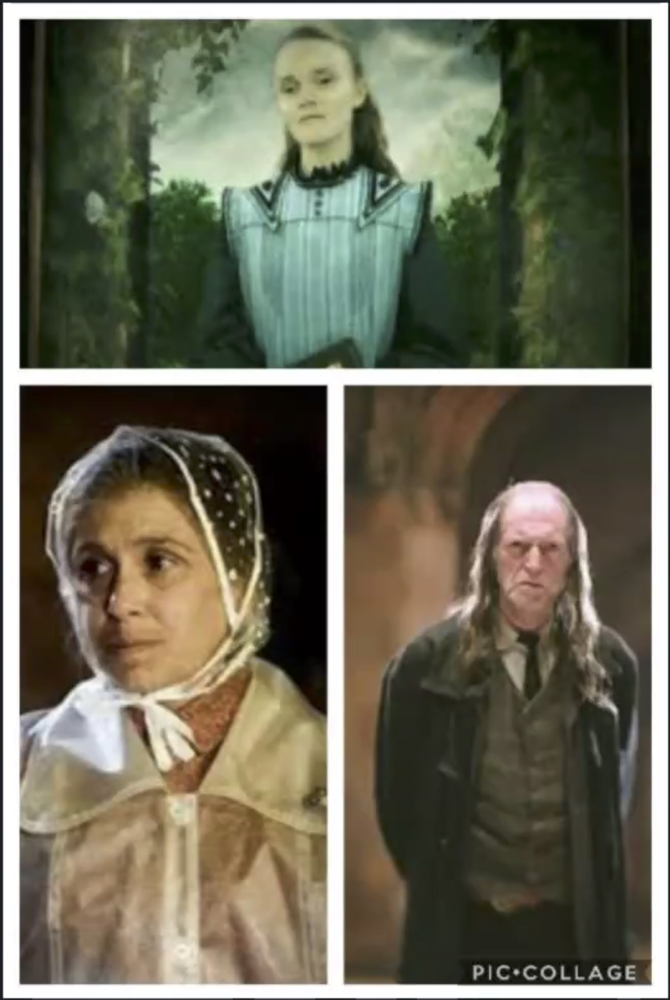

|
|
You're a Squib!
About:
1. A Squib, also known as a wizard-born ,is a non-magical person who is born to at least one magical parent.
2. A Squib is not a Muggle. Born to a wizarding family, a Squib has such a low level of magical power that he or she is essentially unable to do any magic at all.
3. A squib is also called wizard-born Muggles.
|
 |